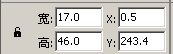

Flash脚本实例《打字》制作教程
作者：TeliuTe 来源：基础教程网
输入错误的时候，应该给个提示，用一个红色文本框，下面我们来看一个练习；
1、提示框
1）在图层面板中插入一个新图层，把图层名称改为“正误”，锁定统计和标题图层；
2）选择文本工具，在属性面板中设定动态文本，字体为 Bitstream Vera Sans Mono 字号24 颜色为背景相同的深蓝色；
3）在第一个输入框左边点一下，拖动宽度手柄看着属性面板，大概拖到18，输入右尖括号 >
4）点选择工具，在属性面板左下角点击小锁图标解锁，把宽度改为17，高度改为46，小心地跟输入框对齐；

5）把实例名称改为 err1_txt，再用复制粘贴的方法，复制出两个，
分别把实例名称改成 err2_txt和 err3_txt，也都对齐到各自的输入框左边，保存一下文件；
2、检查一下
1）到这里基本框架就做好了，保存好，复制一个做备份，也可以总结小记一下，后面开始写脚本代码；
2）点击图层的小锁图标，看一看各个图层中的元件是否正确，有没有跑到别的图层里的；
3）检查一下各个动态文本框的实例名称或变量名有没有出错，有没有重复；
本节学习了设置出错提示框的操作，如果你成功地完成了练习，请继续学习下一课内容；
本教程由86团学校TeliuTe制作|著作权所有
基础教程网：http://teliute.org/
美丽的校园……
转载和引用本站内容，请保留版权信息和本站链接。